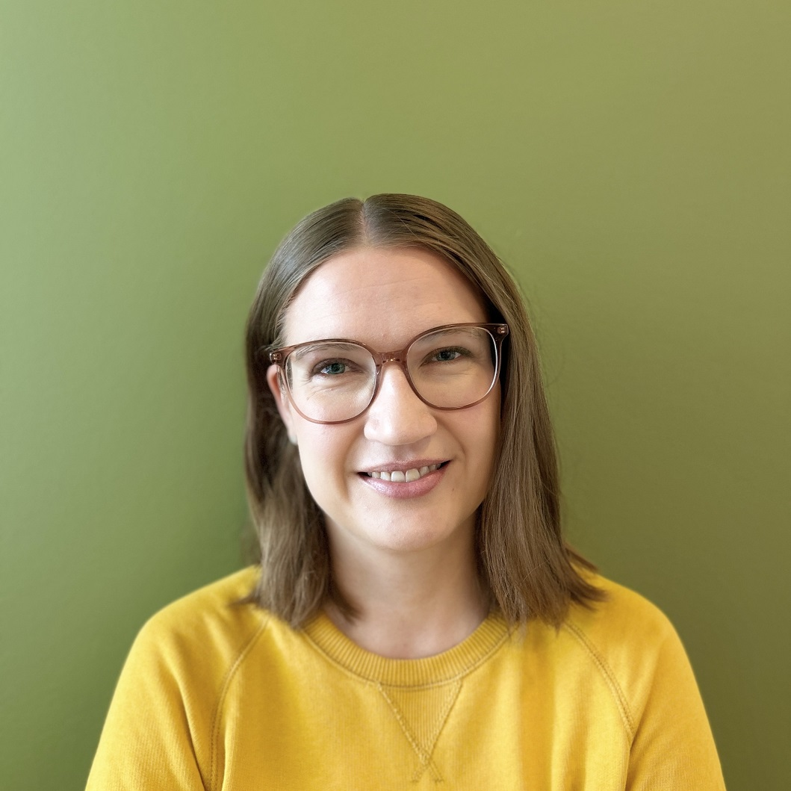

Moi! Olen Katriina, pistämätön tietoalan ammattilainen. Hyppää syvemmälle ja tutustu minuun ja osaamiseeni!
Olen pirteä ja neuvokas valtion virkahenkilö, joka on onnellisimmillaan lankakerien ympäröimänä. Intohimonani on uuden oppiminen – ja salmiakki.
Minulla on vankka työkokemus kirjasto- ja tietopalvelualalta. Olen työskennellyt viimeiset kymmenen vuotta valtion erikoiskirjastoissa monipuolisissa työtehtävissä.
Olen opiskellut sekä humanistisia että luonnontieteellisiä aloja. Minulla on maisterintutkinnot englantilaisesta filologiasta ja tieto- ja asiakirjahallinnosta, ja tällä hetkellä opiskelen it-tradenomiksi.
Haluatko tutustua minuun tarkemmin? Heräsikö mielessäsi jotain kysyttävää? Laita viestiä, niin olen sinuun pian yhteydessä!